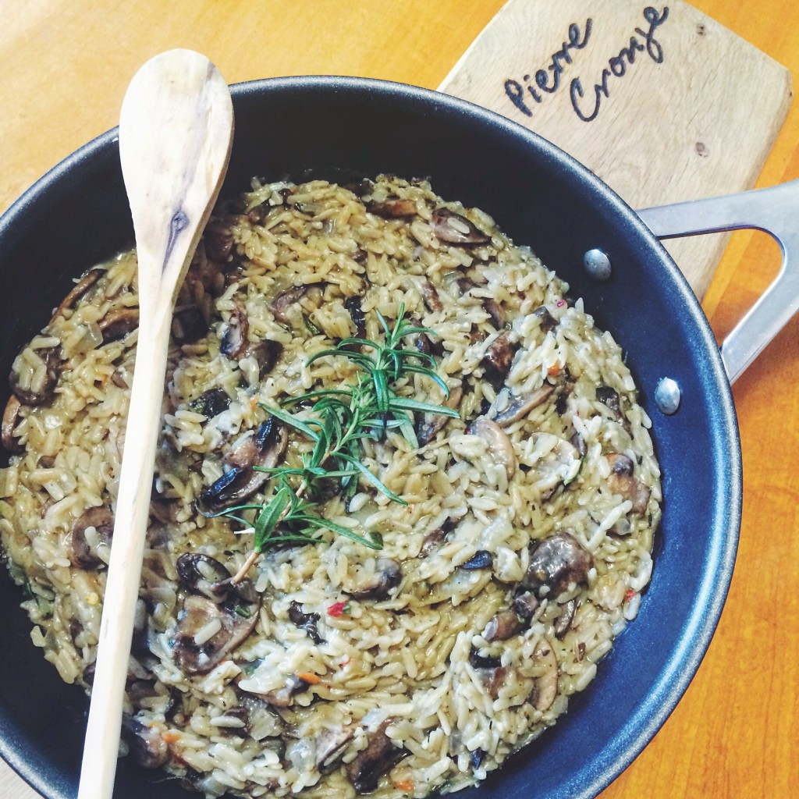

- Arborio rice - 1 cup
- Fresh mushrooms (such as cremini or button) - 2 cups, sliced
- Vegetable broth - 4 cups
- White wine - 1/2 cup
- Onion - 1 small, finely chopped
- Garlic - 2 cloves, minced
- Fresh rosemary - 2 tablespoons, chopped (or 1 tablespoon dried)
- Parmesan cheese - 1/2 cup, grated
- Olive oil - 2 tablespoons
- Butter - 2 tablespoons
- Salt and pepper - to taste
- Fresh parsley - for garnish (optional)
|
- In a saucepan, heat the vegetable broth over low heat and keep warm.
- In a large skillet or saucepan, heat olive oil and butter over medium heat. Add the chopped onion and garlic, and cook until softened and translucent, about 5 minutes.
- Add the sliced mushrooms to the skillet and cook until they are browned and tender, about 5-7 minutes. Stir in the chopped rosemary.
- Add the Arborio rice to the skillet and cook, stirring constantly, until the rice is lightly toasted, about 2 minutes.
- Pour in the white wine and cook, stirring, until it is mostly absorbed by the rice.
- Begin adding the warm vegetable broth to the rice, one ladleful at a time, stirring constantly and allowing each addition to be absorbed before adding more. Continue this process until the rice is creamy and cooked through, about 18-20 minutes.
- Once the rice is cooked, stir in the grated Parmesan cheese. Season with salt and pepper to taste.
- Serve the risotto hot, garnished with fresh parsley if desired.
|

|